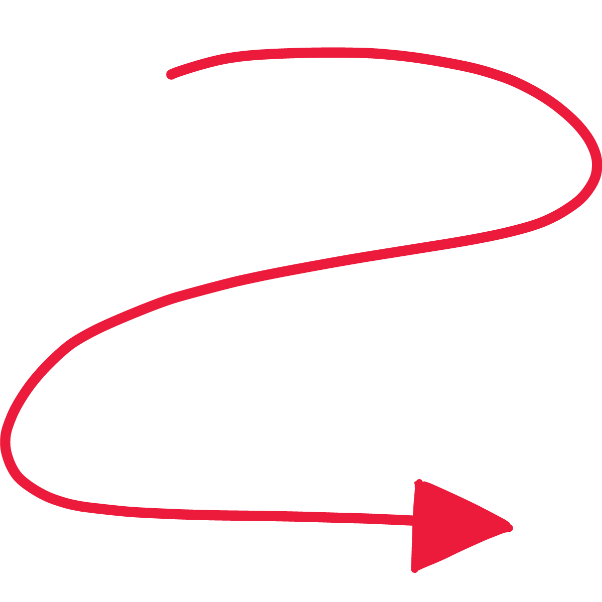

📝 Předmluva
Milí čtenáři,
když jsem psal knihu Budoucnost nepráce, měl jsem jednu věc jasnou: samotné čtení vás neposune tak rychle jako jeden odvážný experiment. Teorie je důležitá — ale teprve když si něco zkusíte na vlastní soubory, vlastní emaily a vlastní chaos v hlavě, začne to dávat smysl.
Proto existuje tento (ne)pracovní sešit. Není to další teorie. Jsou to úkoly, které můžete udělat dnes odpoledne: nastavit si nástroje, napsat první pořádný prompt, porovnat dva chatboty na stejném zadání, nebo si postavit mini-systém pro informace. Přesně to dělám i já — neustále zkouším, co funguje, a co je jen hype.
Nemusíte jít cvičení za cvičením jako po přesném seznamu. Klidně přeskočte, co už umíte, a vracejte se k tomu, co vás pálí. Důležité je, abyste si odnášeli konkrétní výsledek — záložku, šablonu, fungující automatizaci, ne jen pocit, že jste „něco četli o AI“.
A když to nepůjde napoprvé? Normální. AI je nástroj — a jako každý nástroj ho musíte chytit za správný konec. Čím víc si budete hrát, tím dřív zjistíte, kde vám šetří čas a kde vám naopak bere pozornost.
Přeji vám hodně malých vítězství, pár překvapení a hlavně chuť to zkoušet v praxi.
📖 O tomto sešitu
Tento (ne)pracovní sešit je praktickým doplňkem ke knize „Budoucnost nepráce", zaměřeným na manažery, team leadery a všechny, kdo řídí adopci AI ve svých týmech a organizacích. Zatímco Sešit 1 („Pro každého") se zaměřuje na osobní produktivitu, tento sešit řeší:
✅ Jak zmapovat a využít AI nástroje ve firmě
✅ Jak systematicky zavést AI do práce týmu
✅ Jak najít a podpořit lidi, kteří AI adopci potáhnou
✅ Jak vytvořit nástroje a automatizace pro celý tým
✅ Jak pracovat se specializovanými AI agenty
✅ Jak měřit úspěch AI adopce
🎯 Předpoklady
Doporučujeme nejprve absolvovat Sešit 1 („Pro každého"), abyste měli praktické zkušenosti s AI nástroji. Tento sešit na ně navazuje a posouvá je na úroveň týmu a organizace.
🔒 Zlaté pravidlo bezpečnosti
Při práci s AI nástroji vždy respektujte firemní pravidla pro nakládání s daty. Citlivá firemní data patří jen do nástrojů schválených vaší organizací (Microsoft Copilot, Google Workspace AI apod.). Toto pravidlo platí pro všechna cvičení — dále ho nebudeme opakovat.
📋 Přehled cvičení
| # | Cvičení | Čas |
|---|---|---|
| 1 | Zmapujte AI nástroje ve firmě | 30–45 min |
| 2 | Nastartujte AI adopci v týmu | 45–60 min |
| 3 | Najděte svého AI šampióna | 15–20 min |
| 4 | Vytvořte aplikaci nebo automatizaci pro tým | 45–60 min |
| 5 | Automatizujte opakující se procesy | 45–60 min |
| 6 | Práce s AI agenty | 30–45 min |
| 7 | Zhodnoťte pokrok a plánujte | 30–45 min |

Cvičení 1: Zmapujte AI nástroje ve firmě
💡 Zjistěte, jaké AI nástroje už máte k dispozici a jaké vám chybí — možná budete překvapeni.
⏱️ 30–45 minut · Úroveň: Manažerská
Cíl: Získat kompletní přehled o AI nástrojích, které máte ve firmě k dispozici, identifikovat mezery a najít příležitosti.
Co uděláte
Zmapujete stávající AI nástroje ve firmě, identifikujete, kdo je používá (a kdo ne), a najdete oblasti, kde AI může přinést největší hodnotu.
Proč je to důležité
Mnoho firem už platí za AI nástroje, aniž by je plně využívaly. Microsoft 365 Copilot, Google Workspace AI, GitHub Copilot — často jsou součástí existujících licencí.
Postup
1. Zmapujte existující licence
| Kategorie | Příklady | Co dělá |
|---|---|---|
| Součást M365 | Microsoft Copilot, Copilot v Teams/Word/Excel/PowerPoint | AI asistent v celém Microsoft ekosystému |
| Součást Google | Gemini v Docs/Sheets/Meet | AI asistent v Google Workspace |
| Vývojářské | GitHub Copilot, Cursor | AI asistenti pro kód a automatizace |
| Specializované | Jasper (marketing), Synthesia (video), Notion AI | Specializované nástroje pro konkrétní úkoly |
Zjistěte: Co máme v licencích? Co z toho se reálně používá? Kdo má přístup?
2. Identifikujte mezery
Pro každý tým/oddělení se zeptejte:
- Jaké opakující se úkoly tým řeší?
- Kde tráví nejvíce času rutinní prací?
- Jaké nástroje by potřebovali?
3. Najděte quick wins
Hledejte situace, kde:
- AI nástroj je dostupný, ale nikdo ho nepoužívá
- Jednoduchá změna (nastavení, školení) může přinést velkou úsporu
- Jeden člověk už AI používá úspěšně a může inspirovat ostatní
💡 Tip: Začněte od oddělení, kde je největší ochota experimentovat. Úspěch tam motivuje ostatní.
4. Vytvořte přehled
Sepište zjištění do jednoduchého dokumentu:
- Máme a používáme: (nástroj → kdo → na co)
- Máme a nepoužíváme: (nástroj → důvod → akce)
- Nemáme a potřebujeme: (potřeba → doporučený nástroj → odhad přínosu)
Váš výstup
Co si odnášíte
- 💡 Inspirace: Co mě zaujalo:
- 🧪 Experiment: Co zkusím zítra v práci:
- 💬 Sdílení: Komu o tom řeknu:

Cvičení 2: Nastartujte AI adopci v týmu
💡 Rozběhněte AI adopci v týmu — systematicky, měřitelně a bez odporu.
⏱️ 45–60 minut · Úroveň: Manažerská
Cíl: Vytvořit konkrétní plán pro zavedení AI nástrojů do práce vašeho týmu.
Co uděláte
Vytvoříte akční plán AI adopce se třemi horizonty: rychlé výhry (tento týden), střednědobé projekty (tento měsíc) a strategické iniciativy (tento kvartál).
Proč je to důležité
Většina AI iniciativ selhává ne na technologii, ale na adopci. Lidé se bojí změny, nemají čas experimentovat, nebo nevidí přínos. Systematický přístup tyto bariéry překonává.
Postup
1. Identifikujte bariéry
Typické bariéry a jak je překonat:
| Bariéra | Řešení |
|---|---|
| "Nemám čas" | Začněte s 15minutovými úkoly, ukažte konkrétní úsporu |
| "To je příliš složité" | Připravte hotové prompty a šablony |
| "Co když udělám chybu?" | Vytvořte bezpečné prostředí pro experimenty |
| "To nahradí mou práci" | Ukažte, že AI rozšiřuje schopnosti, ne nahrazuje lidi |
| "Nemám přístup" | Zajistěte licence a přístupy (viz Cvičení 1) |
2. Vytvořte 3 horizonty
Horizont 1 — Tento týden (quick wins)
- Zorganizujte 30minutový workshop "AI za 30 minut"
- Připravte 5 hotových promptů pro typické úkoly vašeho týmu
- Ukažte konkrétní příklad úspory (email, shrnutí, analýza)
Horizont 2 — Tento měsíc (projekty)
- Vyberte 2–3 opakující se úkoly pro automatizaci
- Vytvořte sdílené AI asistenty pro tým (GPTs, Projects, Gems — viz Sešit 1, Cvičení 8)
- Nastavte pravidelné sdílení zkušeností (např. 15 minut na týmové poradě)
Horizont 3 — Tento kvartál (strategie)
- Vytvořte AI guidelines pro tým (co ano, co ne, bezpečnost)
- Identifikujte a podpořte AI šampióny v týmu (viz Cvičení 3)
- Měřte úspory a přínosy
- Sdílejte výsledky s managementem
3. Připravte konkrétní materiály
Pro Horizont 1 připravte:
- 5 promptů pro váš tým — přizpůsobte typy úkolů vašeho oddělení
- 1-stránkový průvodce — jak začít s AI (registrace, záložky, první úkol)
- FAQ — odpovědi na typické obavy
💡 Tip: Nechte tým volit si vlastní tempo. Ne všichni musí být na stejné úrovni. Důležité je, aby se každý posunul o krok.
⚠️ BEZPEČNOST: Součástí adopce musí být jasná pravidla:
- Co se smí/nesmí zadávat do veřejných AI nástrojů
- Které nástroje jsou schváleny pro firemní data
- Jak zacházet s výstupy AI (vždy kontrolovat!)
Váš výstup
Co si odnášíte
- 💡 Inspirace: Co mě zaujalo:
- 🧪 Experiment: Co zkusím zítra v práci:
- 💬 Sdílení: Komu o tom řeknu:

Cvičení 3: Najděte svého AI šampióna
💡 Každý tým potřebuje člověka, který AI adopci potáhne. Možná ho už máte — jen o tom nevíte.
⏱️ 15–20 minut · Úroveň: Manažerská
Cíl: Identifikovat lidi ve vašem týmu, kteří mohou být hybateli AI adopce, a domluvit s nimi další kroky.
Co uděláte
Projdete si svůj tým a identifikujete lidi, kteří mají potenciál stát se AI šampióny — těmi, kdo pomáhají ostatním a táhnou adopci zevnitř.
Proč je to důležité
AI adopce funguje nejlépe, když ji řídí lidé zevnitř týmu — ne top-down příkazem. Jeden nadšený kolega, který ostatním ukáže, jak mu AI šetří čas, je účinnější než jakékoliv školení.
Postup
1. Identifikujte kandidáty
Projděte svůj tým (v hlavě nebo na papíře) a odpovězte:
- Kdo z vašeho týmu už sám od sebe zkouší AI nástroje?
- Kdo rád sdílí tipy a triky s ostatními?
- Kdo má přirozenou zvědavost a ochotu experimentovat?
- Kdo kombinuje oborovou expertízu s technologiemi?
Napište si 1–2 jména.
2. Zhodnoťte potenciál
| Vlastnost | Proč je důležitá |
|---|---|
| Ochota experimentovat | Nebojí se zkusit nový nástroj, i když to napoprvé nefunguje |
| Sdílení | Když něco funguje, řekne o tom ostatním |
| Oborová expertíza | Rozumí práci týmu a ví, kde AI může pomoci |
| Důvěra kolegů | Ostatní ho poslouchají a respektují jeho doporučení |
💡 Tip: AI šampión nemusí být IT specialista. Může to být kdokoliv — od asistentky přes marketéra po obchodníka. Důležitá je ochota zkoušet a sdílet.
3. Domluvte si další kroky
Pro každého potenciálního AI šampióna:
- Domluvte si 15minutový 1:1
- Zeptejte se, co už s AI zkouší
- Zeptejte se, co by potřeboval k tomu, aby pomáhal ostatním
- Nabídněte podporu: čas, nástroje, prostor na poradách
4. Definujte roli
AI šampión by měl:
- Pomáhat kolegům s prvními kroky
- Sbírat a sdílet fungující prompty a postupy
- Být kontaktní osobou pro otázky kolem AI
- Dostávat čas (např. 2 hodiny týdně) na experimentování a přípravu
Váš výstup
Co si odnášíte
- 💡 Inspirace: Co mě zaujalo:
- 🧪 Experiment: Co zkusím zítra v práci:
- 💬 Sdílení: Komu o tom řeknu:

Cvičení 4: Vytvořte aplikaci nebo automatizaci pro tým
💡 Vytvořte praktický nástroj, který usnadní práci celému týmu — bez programování.
⏱️ 45–60 minut · Úroveň: Střední/Pokročilá
Cíl: Vytvořit jednoduchou aplikaci nebo automatizaci, která řeší konkrétní opakující se problém vašeho týmu.
Co uděláte
Identifikujete opakující se problém, vyberete vhodný nástroj a vytvoříte funkční řešení — kalkulačku, dashboard, chatbot, nebo automatizaci.
Proč je to důležité
- Automatizace šetří čas celému týmu, ne jen jednomu člověku
- Jednoduchý nástroj může nahradit hodiny manuální práce
- Ukazuje konkrétní hodnotu AI celé organizaci
Postup
1. Identifikujte problém
Hledejte úkoly, které:
- Se opakují každý den/týden
- Jsou časově náročné, ale rutinní
- Vyžadují zpracování dat nebo dokumentů
- Obsahují 3+ kroky a jsou předvídatelné
Příklady:
- Kalkulačka pro cenové nabídky
- Dashboard pro měření KPIs
- FAQ chatbot pro zákazníky
- Automatický generátor reportů
- Formulář s AI zpracováním
- Měsíční reporting (stáhni data → zpracuj → vytvoř prezentaci → odešli)
2. Vyberte nástroj
| Nástroj | Co umí | Pro koho |
|---|---|---|
| Replit (https://replit.com) | Webové aplikace, kalkulačky, dashboardy | Rychlé prototypy |
| Lovable (https://lovable.dev) | Podobné jako Replit, jiné rozhraní | Vizuální tvorba |
| Cursor (https://cursor.sh) | Komplexnější aplikace, automatizace souborů | Pokročilé projekty |
| ChatGPT GPTs | Chatbot s vlastními daty | FAQ, konzultace |
| Microsoft Power Automate | Automatizace v M365 ekosystému | Firemní procesy |
| Make.com / Zapier / n8n | Propojení aplikací do workflow | Automatizace celého procesu |
3. Vytvořte první verzi
Například v Replit:
- Otevřete https://replit.com → Create Repl → HTML, CSS, JS
- Popište AI, co chcete: "Vytvoř mi webovou kalkulačku pro cenové nabídky. Uživatel vybere produkty z nabídky, zadá množství a kalkulačka spočítá cenu s DPH a slevou."
- Iterujte: testujte → upravujte → testujte znovu
Nebo v ChatGPT (pro automatizaci reportu):
Analyzuj tato data a vytvoř:
1. Tabulku s klíčovými KPIs (obrat, růst MoM, počet zákazníků)
2. Grafy: obrat po měsících, top 5 produktů
3. Komentář ke každému KPI (2–3 věty)
Formát: HTML report, který můžu vložit do prezentace.💡 Tip: Začněte jednoduše. První verze nemusí být dokonalá. Důležité je, aby fungovala a řešila problém.
4. Otestujte s týmem
- Dejte nástroj 2–3 kolegům na vyzkoušení
- Sbírejte zpětnou vazbu
- Upravte podle potřeb
5. Postupně rozšiřujte
Jakmile funguje jeden krok, přidejte další. Postupně propojte kroky do workflow.
💡 Tip: Dokumentujte každý automatizovaný krok — kdo ho vytvořil, jak funguje, co dělat, když selže.
⚠️ BEZPEČNOST:
- Pro citlivá data a firemní procesy konzultujte s IT
- Začněte s nekritickými nástroji a veřejnými daty
- Automatizace s firemními daty musí být schválena IT
- Výstupy AI vždy kontrolujte před odesláním
- Mějte záložní manuální postup pro případ výpadku
Váš výstup
Co si odnášíte
- 💡 Inspirace: Co mě zaujalo:
- 🧪 Experiment: Co zkusím zítra v práci:
- 💬 Sdílení: Komu o tom řeknu:

Cvičení 5: Automatizujte opakující se procesy
💡 Automatizujte rutinní procesy a ušetřete celému týmu desítky hodin měsíčně.
⏱️ 45–60 minut · Úroveň: Pokročilá
Cíl: Identifikovat a navrhnout komplexní automatizaci, která propojí více kroků a nástrojů.
Co uděláte
Zmapujete opakující se proces krok po kroku, rozhodnete, co lze automatizovat, a implementujete alespoň jeden krok.
Kdy se automatizace vyplatí
Automatizace dává smysl, když:
- Proces se opakuje min. 1× týdně
- Obsahuje 3+ kroky
- Kroky jsou předvídatelné (jasná pravidla)
- Proces zabírá 30+ minut při manuálním zpracování
Postup
1. Zmapujte proces
Vyberte opakující se proces a zapište každý krok:
Příklad — Měsíční reporting:
- Stáhni data z CRM
- Exportuj data z účetnictví
- Spoj obě tabulky
- Spočítej KPIs (obrat, marže, konverze)
- Vytvoř graf a tabulky
- Napiš komentář k výsledkům
- Vlož do PowerPoint šablony
- Pošli emailem managementu
2. Identifikujte, co lze automatizovat
Pro každý krok zhodnoťte:
- Lze ho automatizovat? (stažení dat, výpočty — ano; strategický komentář — spíše ne)
- Jaký nástroj na to použít?
| Typ úkolu | Nástroj/Přístup |
|---|---|
| Stahování dat | API, Power Automate, skripty |
| Zpracování tabulek | ChatGPT Code Interpreter, Python, Excel macros |
| Generování textu | ChatGPT, Claude, Copilot |
| Prezentace | Gamma, Beautiful.ai, Copilot v PowerPointu |
| Odesílání | Power Automate, Gmail automation |
| Celý workflow | Make.com, Zapier, n8n |
3. Začněte s jedním krokem
Neautomatizujte vše najednou. Vyberte jeden krok a automatizujte ho:
Příklad — Automatický report:
Nahrajte surová data do ChatGPT (Code Interpreter) a požádejte:
Analyzuj tato data a vytvoř:
1. Tabulku s klíčovými KPIs (obrat, růst MoM, počet zákazníků)
2. Grafy: obrat po měsících, top 5 produktů
3. Komentář ke každému KPI (2–3 věty)
Formát: HTML report, který můžu vložit do prezentace.4. Postupně rozšiřujte
Jakmile funguje jeden krok, přidejte další. Postupně propojte kroky do workflow.
💡 Tip: Dokumentujte každý automatizovaný krok — kdo ho vytvořil, jak funguje, co dělat, když selže.
⚠️ BEZPEČNOST:
- Automatizace s firemními daty musí být schválena IT
- Výstupy AI vždy kontrolujte před odesláním
- Mějte záložní manuální postup pro případ výpadku
Váš výstup
Co si odnášíte
- 💡 Inspirace: Co mě zaujalo:
- 🧪 Experiment: Co zkusím zítra v práci:
- 💬 Sdílení: Komu o tom řeknu:

Cvičení 6: Práce s AI agenty
💡 Využijte specializované AI agenty pro manažerské úkoly — od plánování projektů po extrakci znalostí.
⏱️ 30–45 minut · Úroveň: Pokročilá
Cíl: Vyzkoušet a nasadit specializované AI agenty pro konkrétní manažerské úkoly.
Co uděláte
Seznámíte se se specializovanými AI agenty, vyberete si jeden pro svůj aktuální problém a vyzkoušíte ho v praxi.
Proč je to důležité
Univerzální AI (ChatGPT, Claude) je skvělý na všechno, ale specializovaní agenti jsou výrazně lepší na konkrétní úkoly. Mají předdefinované postupy, znalosti a výstupní formáty.
Přehled specializovaných agentů
| Agent | Na co je | Kdy použít |
|---|---|---|
| Context Builder | Vytváření kontextových dokumentů pro AI | Když potřebujete připravit podklady pro AI asistenta |
| Knowledge Extractor | Extrakce znalostí z dokumentů | Analýza velkého množství dokumentů |
| Product Architect | Architektura produktů a systémů | Návrh nového produktu nebo systému |
| Prompt Architect | Tvorba pokročilých promptů | Vytváření komplexních AI zadání |
| Expert Panel | Panel expertů pro diskusi | Potřebujete pohled z různých perspektiv |
| Work Breakdown Structure | Rozpad projektů na úkoly | Plánování projektů, estimace |
Postup
1. Vyberte si agenta pro svůj aktuální problém
Zamyslete se:
- Plánujete nový projekt? → Work Breakdown Structure
- Potřebujete analyzovat dokumenty? → Knowledge Extractor
- Navrhujete nový produkt? → Product Architect
- Potřebujete různé pohledy? → Expert Panel
2. Připravte kontext
Kvalita výstupu závisí na kvalitě vstupu:
- Popište problém co nejkonkrétněji
- Přiložte relevantní dokumenty
- Definujte očekávaný výstup
3. Vyzkoušejte agenta
Příklad s Work Breakdown Structure:
Potřebuji rozložit tento projekt na úkoly:
- Projekt: Zavedení AI nástrojů do marketingového oddělení (10 lidí)
- Deadline: 3 měsíce
- Budget: 50 000 Kč na nástroje
- Cíl: Každý člen týmu aktivně používá AI min. 1x denně
Vytvoř WBS se:
- Hlavními fázemi
- Konkrétními úkoly a sub-úkoly
- Odhadem času
- Závislostmi
- MilníkyPříklad s Expert Panel:
Potřebuji diskusi o: Měli bychom investovat do vlastního AI řešení
nebo používat SaaS nástroje?
Kontext: Střední firma, 200 zaměstnanců, IT oddělení 8 lidí,
budget 500k Kč ročně na AI.
Chci slyšet pohledy: CTO, CFO, CISO, Head of HR, Line Manager.💡 Tip: Agenty můžete použít v ChatGPT (jako GPTs), v Claude (jako Projects), nebo jednoduše vložit jejich instrukce do nového chatu.
Váš výstup
Co si odnášíte
- 💡 Inspirace: Co mě zaujalo:
- 🧪 Experiment: Co zkusím zítra v práci:
- 💬 Sdílení: Komu o tom řeknu:
Cvičení 7: Zhodnoťte pokrok a plánujte
💡 Změřte, co AI přineslo, a naplánujte další kroky — data přesvědčí i největší skeptiky.
⏱️ 30–45 minut · Úroveň: Manažerská
Cíl: Zhodnotit dosavadní AI adopci, změřit přínosy a vytvořit plán dalšího rozvoje.
Co uděláte
Projdete si výsledky ze všech předchozích cvičení, kvantifikujete přínosy a vytvoříte plán pro další kvartál. Na konci budete mít podklady pro prezentaci vedení.
Postup
1. Zhodnoťte adopci v týmu
- Kolik lidí v týmu aktivně používá AI?
- Jaké nástroje se ujaly? Jaké ne?
- Jaké bariéry stále přetrvávají?
- Kde jsou největší úspěchy?
- Jak se zapojil váš AI šampión (z Cvičení 3)?
2. Kvantifikujte přínosy
Zkuste odhadnout:
- Kolik hodin týdně AI šetří jednotlivcům?
- Kolik hodin šetří celému týmu?
- Zlepšila se kvalita výstupů? (méně chyb, rychlejší dodání…)
- Jaká je návratnost investice? (licence vs. ušetřený čas)
💡 Tip: I hrubý odhad je lepší než žádný. Například: "Shrnutí schůzek v Teams Copilot šetří 15 minut na schůzku × 8 schůzek týdně × 10 lidí = 20 hodin/týden."
3. Sbírejte příběhy úspěchů
Konkrétní příběhy jsou silnější než čísla:
- Kdo díky AI vyřešil problém, který by jinak trval hodiny?
- Jaký nástroj nebo postup tým nejvíce ocenil?
- Co bylo největší "aha" moment?
4. Vytvořte plán dalšího kvartálu
Na základě zkušeností definujte:
Co funguje — pokračovat:
- Nástroje a postupy, které se osvědčily
- Sdílení zkušeností, které motivuje
Co nefunguje — upravit:
- Nástroje, které se neujaly (proč? alternativa?)
- Procesy, které jsou příliš složité (zjednodušit?)
Co chybí — přidat:
- Nové nástroje nebo licence
- Školení pro pokročilé techniky
- Automatizace pro další procesy
5. Připravte prezentaci pro vedení
Nechte AI připravit osnovu:
Na základě těchto dat připrav osnovu 5minutové prezentace
pro vedení firmy o AI adopci v našem týmu:
- Počet lidí aktivně používajících AI: [číslo]
- Odhadovaná úspora: [hodiny/týden]
- Nejúspěšnější nástroj: [název]
- Největší úspěch: [příběh]
- Co potřebujeme dál: [licence/čas/podpora]
Struktura: Co jsme vyzkoušeli → Co to přineslo → Co plánujeme dál → Co potřebujeme.Váš výstup
Co si odnášíte
- 💡 Inspirace: Co mě zaujalo:
- 🧪 Experiment: Co zkusím zítra v práci:
- 💬 Sdílení: Komu o tom řeknu:
📚 Další zdroje
Pro manažerskou práci
- AI Adoption Framework — Kompletní framework pro zavedení AI ve firmě
- ROI kalkulačka — Jak spočítat návratnost AI investic
- AI Guidelines šablona — Vzor pro firemní pravidla práce s AI
Pokročilé nástroje
- Replit (https://replit.com) — Rychlé prototypování aplikací
- Lovable (https://lovable.dev) — No-code tvorba aplikací
- Cursor (https://cursor.sh) — AI agent pro znalostní práci
- GitHub Copilot (https://github.com/features/copilot) — AI asistent pro kód
- Make.com / Zapier / n8n — Automatizace workflow
- Power Automate — Automatizace v Microsoft ekosystému
Odkazy
- Elite Prompt Engineer: https://drimalka.com/wp-content/uploads/2025/09/Elite-Prompt-Engineer_CZ.md
- Filip Dřímalka — web: https://www.drimalka.com
Závěr
Gratulujeme — prošli jste celým manažerským (ne)pracovním sešitem.
Na konci byste měli mít:
✅ Mapu AI nástrojů — co máte, co chybí, kde jsou příležitosti
✅ Adopční plán — 3 horizonty s konkrétními akcemi
✅ AI šampióna — člověka, který adopci potáhne zevnitř
✅ Funkční nástroj — aplikace nebo automatizace pro celý tým
✅ Prezentaci — data a příběhy pro vedení
Pamatujte:
- AI adopce je maraton, ne sprint — důslednost přináší výsledky
- Lidé jsou důležitější než technologie — investujte do školení a podpory
- Měřte a sdílejte — data a příběhy přesvědčí i skeptiky
- Bezpečnost na prvním místě — jasná pravidla chrání firmu i zaměstnance
Další kroky:
- Implementujte plán z Cvičení 7
- Rozšiřujte automatizace
- Sdílejte zkušenosti napříč organizací
- Sledujte nové nástroje a trendy
Hodně úspěchů na vaší cestě s AI.
Budoucnost nepráce — (ne)pracovní sešit · Pro manažery a lídry · v2 · © 2025 Filip Dřímalka